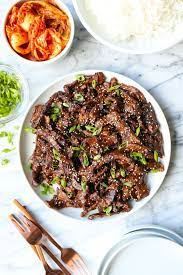

Bulgogi (Korean Barbecued Beef)

Description
Bulgogi, literally "fire meat", is a gui made of thin, marinated slices of meat, most commonly beef, grilled on a barbecue or on a stove-top griddle. It is also often stir-fried in a pan in home cooking. Sirloin, rib eye or brisket are frequently used cuts of beef for the dish.
Ingredients
- 3 tablespoons soy sauce
- 1 tablespoon sesame oil
- 1 tablespoon sesame seeds
- 1 clove garlic, minced
- 1 teaspoon white sugar
- ½ teaspoon salt
- ½ teaspoon ground black pepper
- ¼ teaspoon monosodium glutamate (MSG) (Optional)
- 1 pound beef top sirloin, thinly sliced
- 1 carrot, julienned
- 1 green onion, chopped
- ½ yellow onion, chopped
Steps
- In a large resealable plastic bag, combine soy sauce, sesame oil, sesame seeds, garlic, sugar, salt, black pepper, and MSG. Place beef, carrots, and onions in the bag; seal, and shake to coat the vegetables and beef with the sauce. Refrigerate for at least 2 1/2 hours. I prefer to marinate mine overnight.
- Preheat an outdoor grill for high heat. Remove meat and vegetables from marinade, and place on a large sheet of aluminum foil; seal. Discard marinade.
- Place on grill, and cook for 15 to 20 minutes, or to desired doneness.